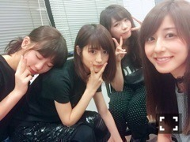

| 2016/07 19 Tue | 質問に答えたよ〜(´>∀<｀)ゝ |
ちはるーむへようこそ！

純奈、若月、真夏、私♡
なかなか無いメンツなんだけど、
服装がみんな黒くて
ちょっと面白い(｡･o･｡)ﾉ
-------------------------♡
ふいに中3組の昔の写真。
何空のMVのとき！
このいくちゃんがお茶目で可愛い。
みんな高校生。
そりゃ若いわけだ...
そしてそして！
たくさんの質問ありがとうございました！！
コメント読みながら
頭の中で答えてた(> <)！笑
本当は全部の質問に答えたい...( ;o; )
ごめんね( ;o; )
でも毎週質問コーナーはやるので
皆さんめげずに質問沢山してください...！
今日は、ファッションやスニーカーに
関しての質問にお答えします〜♪
 Tシャツのサイズは何ですか？
Tシャツのサイズは何ですか？
→普段はSサイズだよ〜！
でも大きめに着たい時はMやLで、
たまにメンズのSサイズのTシャツも
着たりするよ(｡･o･｡)ﾉ
Tシャツをゆるっと着こなしてると
オシャレに見える気がする♪
お洋服はスカート派？パンツ派？
→基本パンツが多いかな〜！
あとほぼほぼ、ロング！
でも少し大人っぽくキメたいときは
ロングスカートで上品に♡
お気に入りのスニーカーはある？
→あんまり数は持ってないから
注目してるものを挙げると、
NIKEのAir max90や
adidasのスタンスミス、
Reebokのポンプフューリーに
ついつい目がいってしまう♡
私はスニーカーは結構シンプルなのを
選びがちだから、
少し派手なのもこれからみてみようかな〜
と思っているよ！
チョーカーはどんなのがいいとかある？
→チョーカーなら何でも好き♡
太いレースも付けるし、
細い紐みたいなのも付ける♪
黒いチョーカーが私的に、
1番合わせやすくて使いやすいんだけど
最近は黒以外の茶色やピンクのも
欲しいな〜と思ってるよ！
NIKE ID で作ろうと思うんだけど何がいい？
→いいな〜羨ましい！
赤とか派手な色で他の人とは
少し違った目立つのもいいと思うし
黒やグレー、白をベースに
一見普通のかと思えばよく見たら
みんなのとは一味違う感じのもいいと思う！
せっかくだから
誰も持ってなさそうのがいいよね〜
と、今日はこんな感じでした(﹡ˆ ˆ﹡)
他の質問もスクショしてあるから
次の質問の中とかに混ぜるかも♪
皆さん質問ありがとう！！
-------------------------♡
ちなみに今日もチョーカー。
衣装さんに可愛い！と褒められ
嬉しくなりました( ◦˙ ˙◦ )
自分の好きなものを、
人に好きと言ってもらえると
とっても嬉しいよね。
-------------------------♡
♬ ChihaMusic
「ワタリドリ」【Alexandros】さん
イントロがもう、好き。
2番の歌詞がいいなーと思います。
サビの高音も心に響いてくる！
ライブで聞いたら凄い元気になりそう。
飛び跳ねながら！
コメントみてると皆さんが
その曲いいよね！
と共感してくださったり、
この曲も聴いてみて！
とオススメしてくださっていて
凄い嬉しい♡
皆さんこれからもオススメ教えてね〜！！
明日もテスト(> <)
がんばろ(> <)
斎藤ちはる
コメント(271)
2016/07/19 23:42